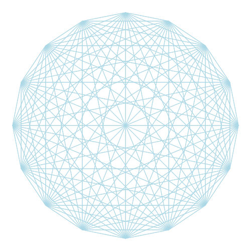

前言
欢迎来到 mdBook 模板 首页。
该网页使用 mdBook 构建。
导航
效果展示
章节概览
章节概览（可选）
文本示例
正文
被强调的文本是这样子的：emphasis。
注：本模板客制化了正文字体：正文采用衬线字体，标题采用无衬线字体。
表格
样例表格：
| Header 1 | Header 2 | Header 3 |
|---|---|---|
| 123 | 456 | 789 |
代码块
fn main() { println!("Hello!"); }
注：本模板客制化了 HTML 标签 <kbd>，效果如下：Control + C
图片 & 图表
样例图片：

注：本模板为 图表 (HTML 标签 <figure>) 定制了样式，如下所示：